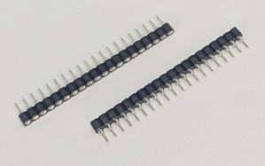
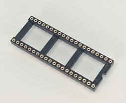
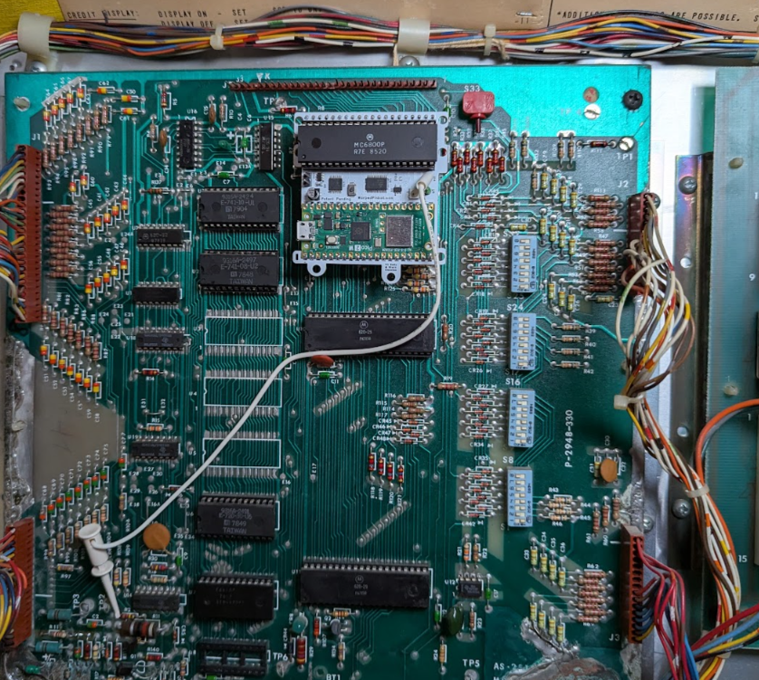
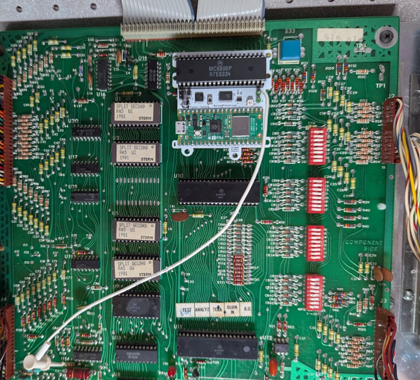
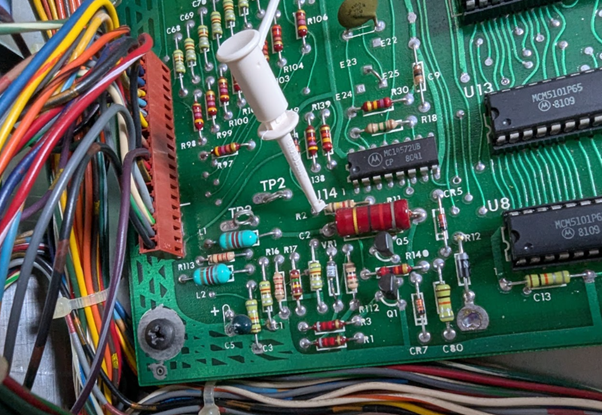
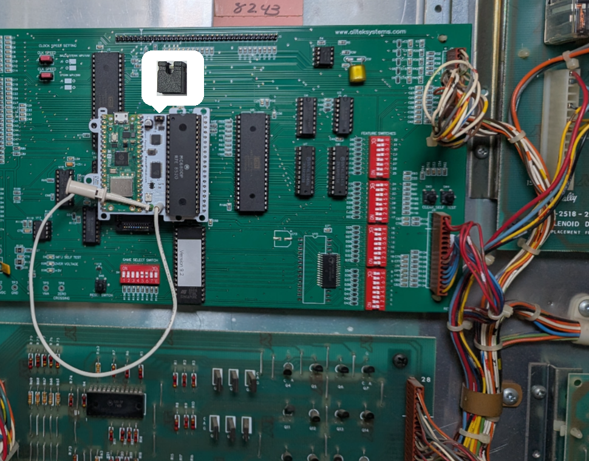
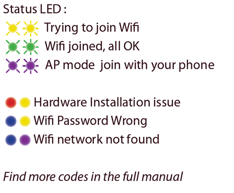

Classic Bally / Stern Vector Quick Start (v1.0)
Fast-path instructions for installing the Warped Pinball Vector board on a classic solid-state Bally or Stern machine (Bally AS-2518-17 / AS-2518-35 MPU, Stern MPU-100 / MPU-200).
Steps
Check out installation videos at WarpedPinball.com.
- Power off the pinball machine.
- Remove the main processor chip (
MC6800) from the MPU board. Place it into the Vector board's 40-pin socket, matching pin #1 and checking for bent pins. - Insert the pin strips into the MPU-board processor socket. Press firmly on each pin so it seats fully.

- Insert the round-pin chip carrier into the socket strips. In some kits this socket is pre-installed onto the Vector circuit board, you may skip this step.

- (Optional) Attach the sticky standoff and screw to the Vector board and peel the backing.
-
Place the board into the MPU-board socket, confirm all pins are seated, and make sure the processor orientation matches the original.
Installed on a Bally MPU board:

Installed on a Stern MPU board:

-
Clip the white wire to the reset point shown below. This same location is present on every Bally AS-2518 and Stern MPU-100/200 board.
Clip-to location:

Using an Alltek Systems replacement MPU? Skip the white wire clip — see Alltek Systems replacement MPU board at the end of this guide. -
Power on the game and connect a smartphone to the Warped Pinball WiFi network. Click Sign In if prompted.
- Review the configuration page that appears.
- Select your home WiFi SSID and password. Choose your game and software version from the dropdown. If not listed, select Generic (Bally or Stern MPU-100) or Generic MPU-200 (Stern MPU-200) and contact Warped Pinball.
- Set a Pinball Admin password to protect the Admin/Service page
- Click Save, wait for direction to power off the game.
- Power on and wait for the IP address to appear on the display. Enter the IP on any
device on the same WiFi—for example
192.168.1.189. Note - not all games show the IP address on the front displays. If it is not shown on the display, find it in your router's device list or re-enter WiFi setup and read it at the bottom of the configuration page.
Enjoy the game and chase new high scores! Enter player names under Players so everyone gets an individual best-score board.
Alltek Systems replacement MPU board
If your game has an Alltek Systems "Ultimate MPU" board in place of the original Bally or Stern MPU, change step 7:
- Do not use the white wire clip. You may clip the white wire on the extra board test point to keep it out of the way.
- Instead, install the shorting jumper included in your kit onto the header on the Warped Pinball Vector board. See the picture here for correct board placement.
Everything else in the install is the same.

Supported games
Vector installs the same way on every classic Bally and Stern single-MPU board. These board revisions are electrically compatible with each other; the lists below only help you identify your game and pick the right profile in setup.
Bally — MPU AS-2518-17
Black Jack · Bobby Orr Power Play · Eight Ball · Evel Knievel · Freedom · Mata Hari · Night Rider · Strikes and Spares
Bally — MPU AS-2518-35
Black Pyramid · BMX · Centaur · Centaur II · Dolly Parton · Eight Ball Deluxe · Eight Ball Deluxe Limited Edition · Elektra · Embryon · Fathom · Fireball II · Flash Gordon · Frontier · Future Spa · Grand Slam · Harlem Globetrotters · Hotdoggin' · Kings of Steel · KISS · Lost World · Medusa · Mr. & Mrs. Pac-Man · Mystic · Nitro Ground Shaker · Paragon · Playboy · Rolling Stones · Silverball Mania · The Six Million Dollar Man · Skateball · Space Invaders · Speakeasy · Spectrum · Spy Hunter · Star Trek · Supersonic · Vector · Viking · Voltan Escapes Cosmic Doom · X's & O's · Xenon
Stern — MPU-100
Cosmic Princess · Dracula · Hot Hand · Lectronamo · Magic · Memory Lane · Nugent · Pinball · Stars · Stingray · Trident · Wild Fyre
Stern — MPU-200
Ali · Big Game · Catacomb · Cheetah · Flight 2000 · Freefall · Galaxy · Iron Maiden · Lightning · Meteor · Nine Ball · Orbitor 1 · Quicksilver · Seawitch · Split Second · Star Gazer · Viper
If your exact title and ROM revision are not in the setup dropdown, pick the matching generic profile — Generic Bally/Stern MPU for any Bally or Stern MPU-100 game, or Generic MPU-200 for a Stern MPU-200 game — and email roms@WarpedPinball.com so we can add it.
Status LED
The Status LED reports install and connection state. Green means all is well; other common color combinations are shown here — see the full manual for the code table.

RAM corruption: missing display digits or bad high scores
RAM data can become scrambled during installation— you may see missing or garbled display digits, a nonsense high score, or credits that will not clear.
If that happens, open the Vector web page, go to the Admin panel, and click Reset Pinball Machine. This reinitializes the game's RAM to a clean state and restarts the machine. Run a game afterward to confirm the displays and high score look correct.
This Warped Pinball product is patent pending.